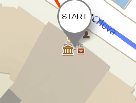
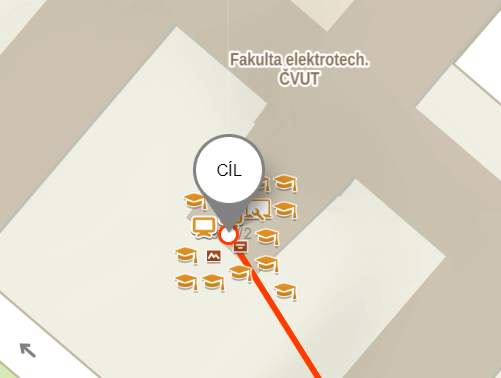

Doručování zásilek pomocí dronů je už v dnešní době
známým tématem, například společnost Amazon již v USA
takovouto službu provozuje a propaguje. Doručování
zásilek pomocí dronů totiž nabízí mnoho výhod, jako je
rychlost doručení, možnost dopravy do obtížně přístupných
oblastí a snížení dopravního zatížení na silnicích. Na
druhou stranu však vyvolává i určité výzvy, například
otázky soukromí, bezpečnosti a regulace vzdušného
prostoru. V budoucnu se očekává, že technologický vývoj
a legislativní úpravy pomohou tento způsob doručování
rozšířit, čímž se stane běžnou součástí logistiky.
Jak to je ale s efektivitou a rychlostí? Pro finále
TEOL 2025 je potřeba doručit pár zásob na místo konání
ze sídla Technologické gramotnosti před budovu Fakulty
elektrotechnické ČVUT. Budeme porovnávat tři varianty
doručování:
-
Zásoby můžeme vzít a donést na fakultu pěšky, bohužel
kvůli objemu zásilek uneseme pouze 7,5 kg najednou. Cesta do
sídla Technologické gramotnosti a zpět z ulice
trvá kvůli schodům 3 minuty. Zásoby budou nosit 3 lektoři
zároveň. Vydýchaný CO2 zanedbejte.
-
Zásoby můžeme naložit do auta a před fakultu odvézt,
musíme ale počítat s tím, že naložení a vyložení
zásob do auta trvá 10 minut (musí se snést ze sídla
Technologické gramotnosti a naložit, poté zase
vyložit). Auto uveze 60 kg zásob najednou. Musíme počítat
s tím, že u Vítězného náměstí bývá v těchto
hodinách velký provoz a zpozdíme se na něm
v průměru 10 minut. Auto spotřebuje 5 l paliva na
100 km a produkuje 2,5 kg CO2 na litr
paliva. Auto se po vyložení musí vrátit zpět k sídlu
Technologické gramotnosti, jelikož nemůže parkovat před
fakultou.
-
Nejzajímavější variantou je doručení zásilek dronem, který
má Technologická gramotnost pronajatý. S nákladem letí
průměrnou rychlostí 10 m/s, naložení dronu trvá 45 sekund
a vyložení pouze 25 sekund. Dron má průměrnou spotřebu
200 W a kapacitu baterie 85 Wh. Výměna baterie trvá dvě
minuty a mění se v tu dobu, kdy už dron není
schopen udělat cestu tam a zpět. Nevýhoda dronu je jeho
nosnost, unese pouze 5 kg zásob. Počítejte se 100% účinností
dobíjení baterií a uhlíkovou intenzitou 457
g CO2eq/kWh. Dron se po vyložení vždy vrací
do sídla Technologické gramotnosti. Spotřebovanou energii
dronu počítejte jako energii celé nabité baterie nebo poměr
počtu vykonaných cest na energii baterie (do dronu vždy
dáváte plně nabitou baterii).
Jaký způsob doručování si mají lektoři vybrat k doručení
115 kg zásob? Míru atraktivity způsobu doručování můžeme
vyjádřit jako
kde t je čas v minutách, c je eq. CO2
v kg a
je koeficient pohybu, který je pro variantu a) 100, b) 30
a c) 0. Nižší hodnota tohoto spočteného koeficientu
K je lepší.
Pozn.: pro výběr trasy použijte
https://mapy.cz
a zvolte nejkratší trasu pro automobil a turistickou
pro pěší. Délku doručovací dráhy dronu měřte za pomoci
nástrojů -> měření v pravém dolním rohu.
Přesná specifikace startovní a cílové pozice:


Která z následujících tvrzení jsou pravdivá?